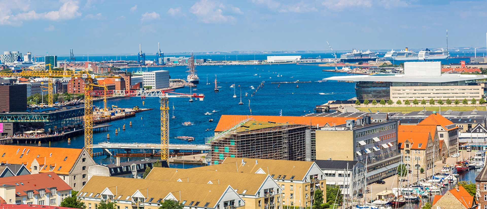

Verdens største cykelløb, Tour de France, kommer til verdens bedste cykelby i sommeren 2021.
København er den officielle start-by, og nu er ruten gennem byens gader klar

Fredag steg københavnernes regning for udligning pludselig til 1,6 milliarder
Regningen for en ny udligningsreform bliver langt større for en række hovedstadskommuner, viste nye
beregninger fredag. Nu er kender flere af hovedstadens borgmestre, at de er nødt til at hæve
skatten.